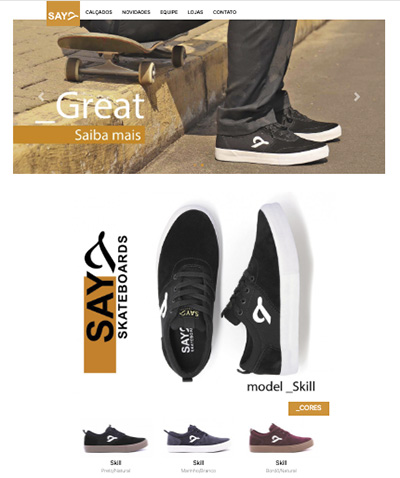
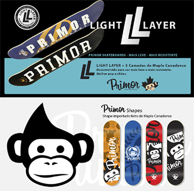
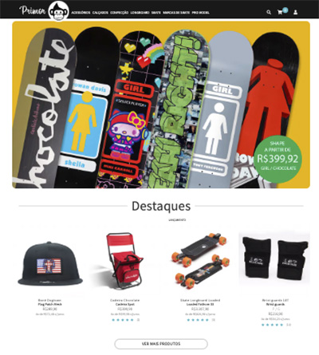

Say Skateboards

Criada pelo skatista e designer Elisandro Souza que trabalhou muitos anos no setor calçadista
desenvolvendo tênis para prática do skate, a idéia de ter a sua própria marca começou a sair do papel no
início de 2020.
Além da marca de tênis, Jam/Geleia que também como é conhecido, criou a Primor Skateboards neste mesmo
ano. Ambas as marca tem como principal objetivo desenvolver produtos de alta qualidade para a prática do
skate.
sayskateboards.com.br
Primor skateboards

A Primor Skateboards é uma marca criada pelo skatista e designer Elisandro Souza, também conhecido como
Geleia/Jam.
Primor é o nome de um bairro onde alguns skatistas se reuniam para andar de skate na cidade de Sapucaia
do Sul/RS.
Atualmente a Primor desenvolve shapes, rodas, rolamentos, lubrificantes e lixas. Produtos com qualidade
Premium fazem com que a Primor se destaque cada vez mais no mercado..
primorskateboards.com.br
Primor Skate Shop

É uma skate shop online que trabalha com produtos nacionais e importados e possui marca própria, a
Primor
Skateboards, que conta com uma linha de produtos: shapes de skate, rodas, rolamentos, lixas, parafusos
de base e lubrificante.
Além de oferecer os melhores produtos para seu skate, contamos com atendimento especializado, que
ajudará a tirar todas as suas dúvidas para você fazer a melhor escolha.
No Brasil, a Primor Skate Shop é autorizada da empresa Americana Crailtap, que fornece as marcas Girl
Skateboards, Chocolate Skateboards, Fourstar e Royal Trucks.
Os produtos da Primor Skateboards são vendidos para atacado e varejo.
primorskateshop.com.br